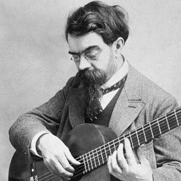

Les guitaristes célèbres
Alonso Mudarra
Alonso Mudarra est un compositeur, vihueliste et guitariste du XVIe siècle. Il fait partie des premiers compositeurs à avoir écrit des œuvres pour la guitare. Il publie notamment, Tres libros de musica en cifra para vihuela en 1546, qui comprend, outre des pièces pour vihuela et pour le chant, six pièces pour guitare seul.
Nous n'avons bien évidemment, aucun enregistrement de cette période.
Robert de Visée
Robert de Visée est un guitariste et compositeur baroque du XVIIe siècle. Il s'est rendu célèbre nottament pour avoir été le professeur de guitare de Louis XIV.
Fernando Sor
Fernando Sor est un guitariste espagnol né à Barcelone en 1778 et décédé à Paris en 1839. Guitariste virtuose et fin pédagogue, il n'aura de cesse d'écrire et de composer pour son instrument des études, des variations, des menuets, des transcriptions d'airs d'opéra, qui sont des pièces toujours interprétées de nos jours par les guitaristes classiques du monde entier.
À la même époque, d'autres guitaristes espagnols, comme Dionisio Aguado ou italiens, tels que Matteo Carcassi, Ferdinando Carulli, Mauro Giuliani, contribueront, de la même manière à la popularité de l'instrument en donnant concerts et récitals, ou en éditant des méthodes d'apprentissage.
Francisco Tarrega
Né en 1852 en Espagne, Francisco Tarrega est considéré comme le père de la guitare classique moderne. En effet, il a établi les bases de la technique guitaristique telle qu'elle sera enseignée pendant le XXe siècle.
Il est l'auteur d'un nombre incroyable de tubes, de Recuerdos de la Alhambra à Capricho árabe et, bien sûr, l'incontournable Gran vals dont un extrait a été utilisé par Nokia pour les soneries de téléphones.
Sa technique de jeu se diffusera mondialement grâce à une cohorte d'élèves/apôtres parmi lesquels on peut citer Miguel Llobet et Emilio Pujol ; tous deux deviendront enseignants virtuoses.
Agustín Barrios Mangoré
Agustín Barrios est né au Paraguay à la fin du XIXe siècle. Véritable virtuose de la guitare, il se produit d'abord en Amérique du sud avant de devenir célèbre dans le monde entier. Il compose plus de 300 pièces parmi lesquelles son chef-d'œuvre "La Catedral".
Il réalise de nombreux enregistrements sonores pour le phonographe, une technologie toute récente à cette époque-là.
Andrés Segovia
Andrés Segovia est né le 21 février 1893 à Linares en Espagne.
Jeune adolescent il va transcrire de nombreuses oeuvres de compositeurs célèbres comme Jean-Sébastien Bach, et interpréter en public des oeuvres de compositeurs guitaristes tels que Francisco Tarrega ou Miguel Llobet. Grâce à un succès grandissant, il aura pendant toute sa vie, l'occasion de rencontrer de grands compositeurs du XXe siècle ; Hector Villa Lobos, Joaquim Rodrigo ; qui composeront pour lui des pièces sur mesure.
Villa Lobos composa les Douze Études spécialement pour lui et en 1954, Joaquin Rodrigo, compositeur du fameux Concerto de Aranjuez, compose la Fantasia para un Gentilhombre. Toutes ces pièces seront l'occasion pour Segovia> de faire connaître la guitare au point de lui apporter une renommée mondiale au même titre que le piano.